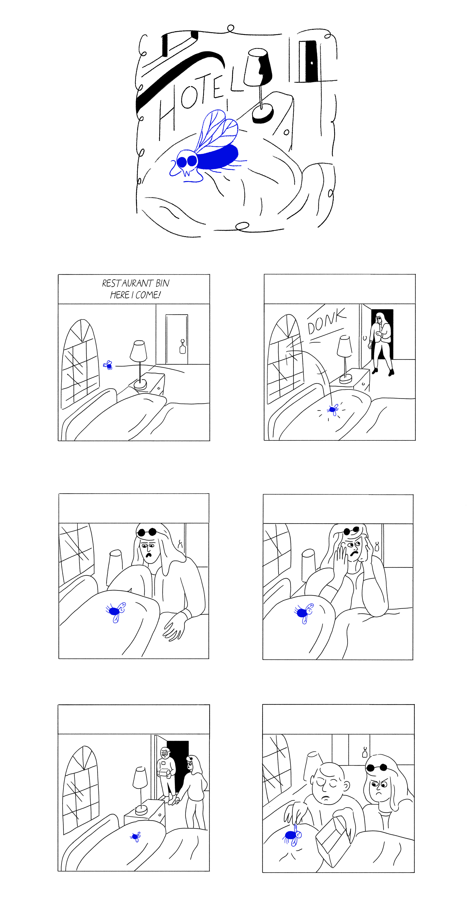
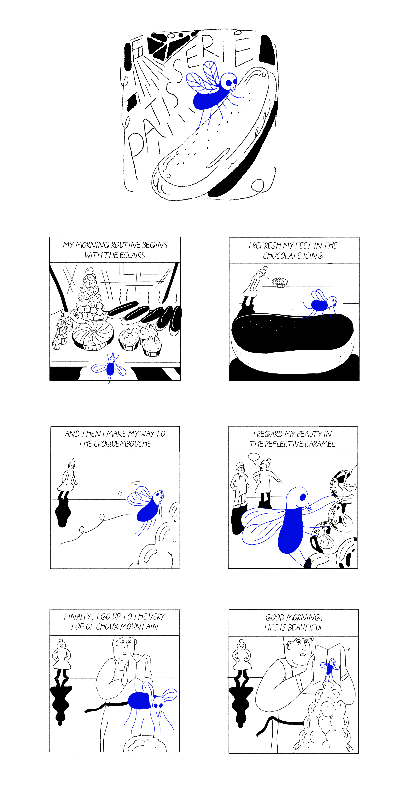
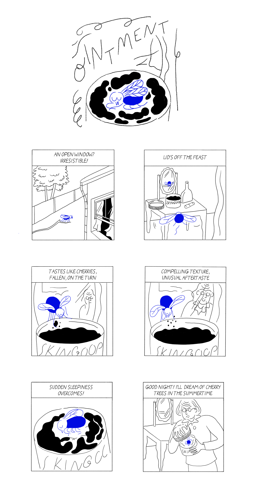
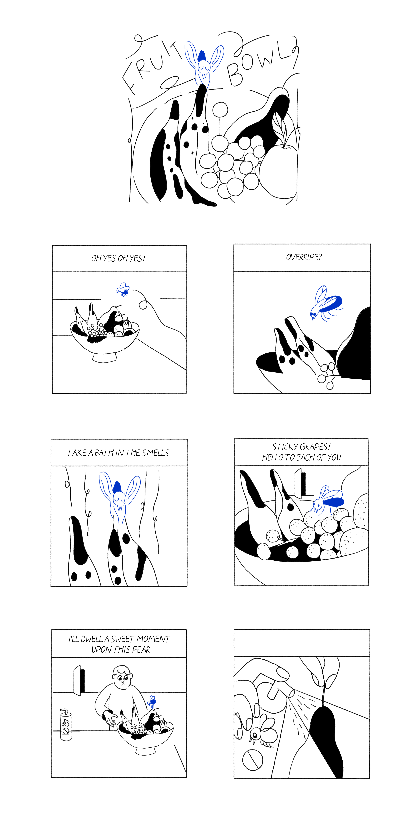
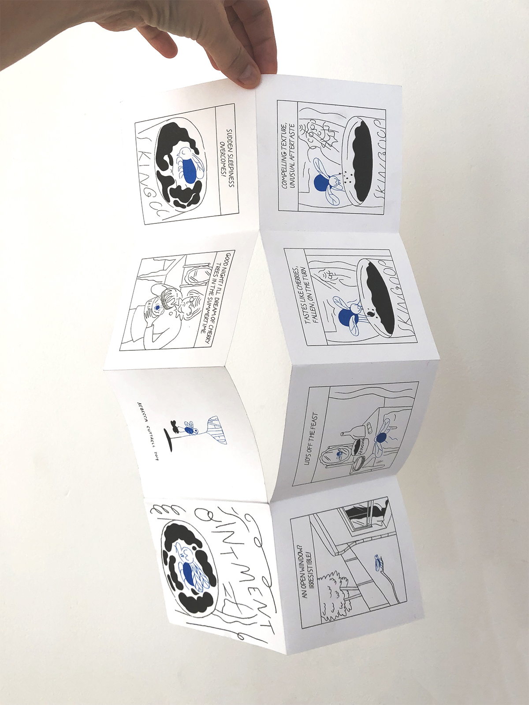
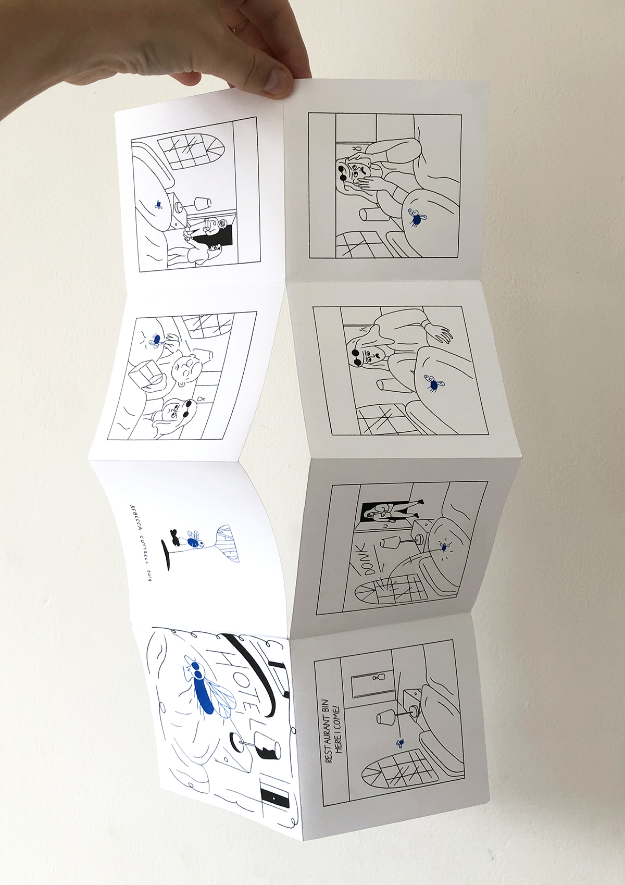
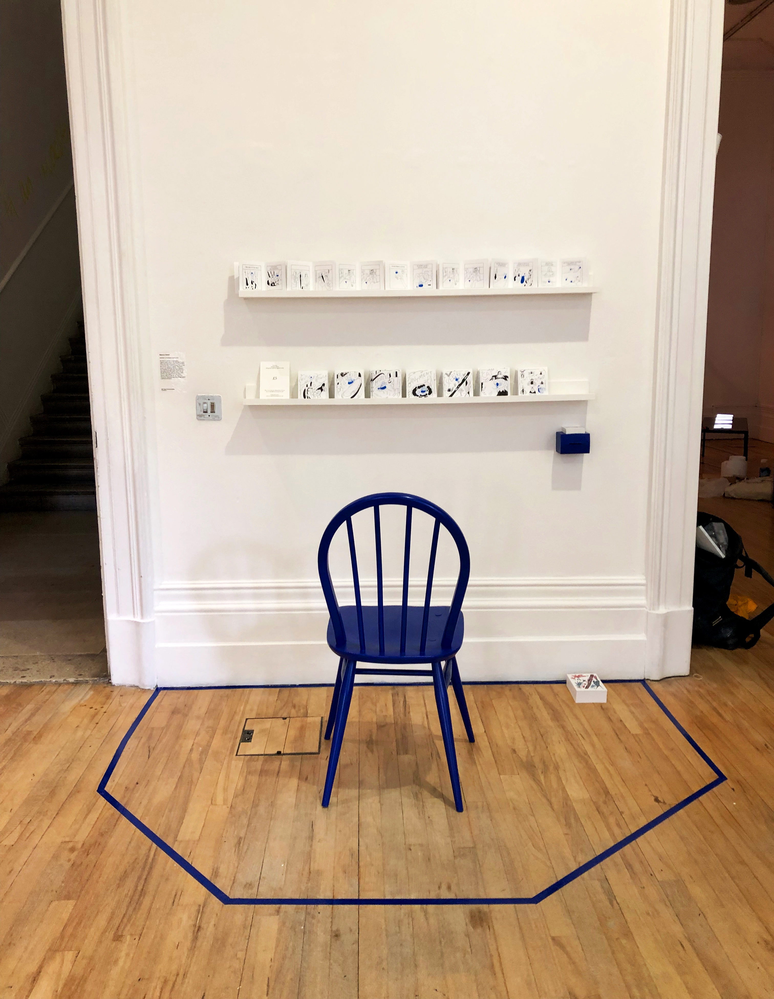

Swatted
Swatted is a series of short comics about a fly who dies in every story. The stories are composed by following eight rules, and a different story emerges each time. The project takes the form of risograph-printed origami books. Further notes on this project…

Rules
- Six panel stories.
- The fly dies in every story.
- A die roll determines the panel in which the fly dies.
- The fly is relentlessly optimistic the circumstances.
- The fly is unaware of his low status and undesirability in human situations.
- Often, a second story is happening in the background.
- The primary voice is the fly, who performs a monologue for the audience.
- After the fly’s death, there is silence, though events may still be occurring.






